Abbreviated Group Checker
- Checker searches for abbreviated groups in the structure:
- contracted;
- expanded; or
- both.
- Fixer offers:
- ungroup abbreviated groups;
- expand abbreviated groups;
- contract abbreviated groups.
Example:
| Abbreviated Group Checker | Warning: | Fix | ||
|---|---|---|---|---|
| Ungroup | Contract Group | Expand Group | ||
| Detect Expanded Groups | 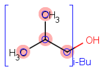 |  |
||
| Detect Contracted Groups |  |
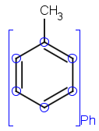 | ||
| Detect All Groups |  |
 |
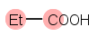 | 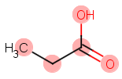 |
Note: If attachment point is not connected to any atom, ungrouping removes attachment points of the abbreviated group and adds an implicit hydrogen.
Absent Chiral Flag Checker
- Checker searches for Absolute chiral flag attached to the molecule if the molecule is chiral and all stereo centers are precisely marked.
- Fixer adds chiral flag (Absolute) to the molecule.
Example:
| Absent Chiral Flag Checker | Warning: | Fix |
|---|---|---|
| Add Chiral Flag | ||
| Detect Absent Chiral Flag | 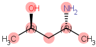 | 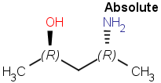 |
Alias Checker
- Checker searches for aliases in the structure.
- Fixer offers:
- converting the alias to atom if the alias value corresponds to an element (e.g. Ar);
- converting the alias to abbreviated group if the alias values corresponds to a group in the abbreviated group list;
- removing alias (revealing the atom under the alias); or
- deleting the alias atom.
Example:
| Alias Checker | Warning: | Fix | |||
|---|---|---|---|---|---|
| Convert to Atom | Convert Alias to Group | Remove Alias | Delete Atom | ||
| Detect Alias | 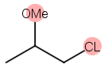 | 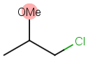 | 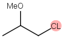 |  |
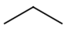 |
Notes: "OMe" and "CL" were defined as alias. After converting "OMe" to methoxy group, the abbreviated group is linked correctly to the chain, i.e., bond through the oxygen atom.
Alias only covers the atom, and fixer removes this alias from the original atom.
Aromaticity Error Checker
- Checker searches for General, Basic, or Loose aromatic systems that can't be dearomatized or rearomatizing with the given method does not reproduce the initial molecule. Details on aromaticity detection.
- Fixer offers:
- rearomatizing or;
- dearomatizing the aromatic system.
Example:
| Aromaticity Error checker | Warning: | Fix | |
|---|---|---|---|
| Rearomatize | Dearomatize | ||
| General | 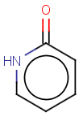 | ||
 |
|||
| Basic | 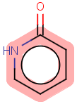 |  |
|
|
|||
| Loose | |
|
|
| 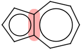 |  |
 |
|
Note: The 2-pyridone aromatized in general mode is corrected after a checking of aromatization in basic mode.
In this case, both rearomatization and dearomatization fix yields the same structure.
Atom Map Checker
- Checker searches for atom maps.
- Fixer offers removing atom maps.
Example:
| Atom Map Checker | Warning: | Fix |
|---|---|---|
| Remove Atom Map | ||
| Detect Atom Map | 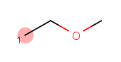 | 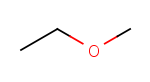 |
Atom Query Property Checker
- Checker searches for atoms having query properties. Tick options for searching:
- Hydrogen Count
- Connection Count
- Ring Bond Count
- Ring Count
- Implicit Hydrogen Count
- Smallest Ring Size
- Aromaticity
- Substitution Count
- Unsaturation
- Explicit Connection Count
- Fixer offers removing the identified query properties.
Example:
| Atom Query Property Checker | Warning: | Fix |
|---|---|---|
| Removing query property | ||
| Detect Atom Query Property | 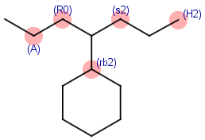 | 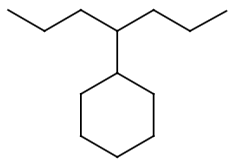 |
Atom Value Checker
- Checker searches for atom values.
- Fixer offers removing atom values or deleting the atom with value.
Example:
| Atom Value Checker | Warning: | Fix | |
|---|---|---|---|
| Remove Atom Value | Delete Atom | ||
| Detect Atom Value |  |
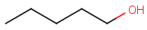 | 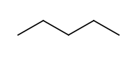 |
Attached Data Checker
- Checker searches for attached data.
- Fixer offers removing attached data or deleting the atom with attached data.
Example:
| Attached Data Checker | Warning: | Fix | |
|---|---|---|---|
| Remove Attached Data | Delete Atom | ||
| Detect Attached Data |  |
 |
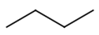 |
Bond Angle Checker
- Checker searches for bonds NOT matching the following rules:
- Triple bond angle 180° (± 0.5 rad):
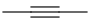 - Double bond angle 120° or 180° (± 0.5 rad):

- sp2 atom's bond angles 120°:

- sp3 atom's bond angles 90°
or 3 bond angles 120°, 4th bond of an angle of n times 15°;
or a bond angle of 120° and two adjacent angles equal:
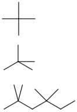 - Fixer offers cleaning the structure by 2D clean or partial clean.
Example:
| Bond Angle Checker | Warning: | Fix |
|---|---|---|
| Clean | ||
| Detect Bond Angle errors | 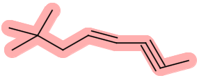 |  |
Note: The current version of bond angle checker examines chain bonds of 2D molecules. Envelope-shaped cyclic compounds are considered as error. Partial clean is not available.
Bond Length Checker
- Checker searches for bond lengths different than the default setting.
- Fixer offers cleaning the structures by 2D clean or partial clean.
Example:
| Bond Length Checker | Warning: | Fix |
|---|---|---|
| Clean | ||
| Detect short bonds | 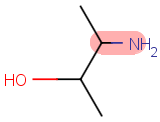 | 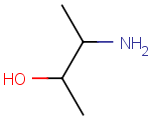 |
| Detect long bonds |  |
|
| Detect both bonds | 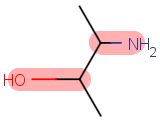 |
Note: The current version of bond length checker examines chain bonds of 2D molecules. Partial clean is not available.
Chiral Flag Error Checker
- Checker searches for incorrectly set chiral flags: "Absolute" flag can only be set when all chirality information is specified for the given molecule.
- Fixer offers removing the chiral flag.
Example:
| Chiral Flag Error Checker | Warning: | Fix |
|---|---|---|
| Fix Chiral Flag | ||
| Detect invalid chiral flag | 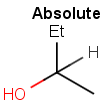 |  |
Circular R-group Reference Checker
- Checker searches for series of R-group references where the R-groups refer to each other resulting in a closed loop.
- Fixer: no fixer is available for this checker.
Example:
| Circular R-group Reference Checker | Warning: | Fix |
|---|---|---|
| Detect circular R-group references | 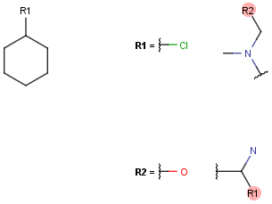 |
Coordination System Error Checker
- Checker searches for errors in the use of coordinative bonds:
- 2 multicenters connected with a bond
- coordinated atom is connected to an atom of the same multicenter with a coordinative bond
- multicenter merged with one of its atoms
- Fixer offers deleting the wrong bond or the multicenter
Example:
| Coordination System Error Checker | Warning: | Fix |
|---|---|---|
| Delete bond | ||
| Detect coordinative bond |  |
 |
| Detect coordinative bond |  |
 |
Covalent Counterion Checker
- Checker searches for covalently bound counter ions.
- Fixer offers changing the structure to the ionic form.
Example:
| Covalent Counterion Checker | Warning: | Fix |
|---|---|---|
| Convert to Ionic Form | ||
| Detect Covalent Counterion | 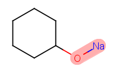 | 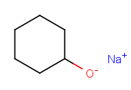 |
Crossed Double Bond Checker
- Checker searches for crossed double bond types (molecules with unknown or unspecified configuration).
- Fixer offers changing crossed double bond to wiggly double bond type.
Example:
| Crossed Double Bond Checker | Warning: | Fix |
|---|---|---|
| Convert to Wiggly Double Bond | ||
| Detect crossed double bond | 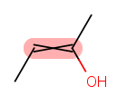 | 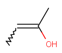 |
Note: Reverse action is: Wiggly Double Bond Checker.
Empty Structure Checker
- Checker searches for empty structure fields (available in multiple structures files).
Explicit Hydrogen Checker
- Checker searches for explicit hydrogens. Tick options for searching:
- lonely
- isotopic
- charged
- radical
- mapped
- wedged
- Fixer offers removing explicit hydrogens and the selected special atoms.
Example:
| Explicit Hydrogen Checker | Warning: | Fix |
|---|---|---|
| Remove Explicit Hydrogen | ||
| Detect Explicit Hydrogen | 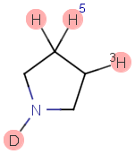 |  |
Explicit Lone Pairs Checker
- Checker searches for explicitly drawn lone pairs (inserted as Special node from the Advanced tab of the Periodic Table).
- Fixer offers removing the explicit lone pair.
Example:
| Explicit Lone Pairs checker | Warning: | Fix |
|---|---|---|
| Delete Atom | ||
| Detect Explicit Lone Pair | 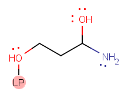 | 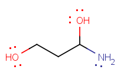 |
Isotope Checker
- Checker searches for isotopic atoms.
- Fixer offers changing the isotopic atom to the most abundant natural isotope of that element.
Example:
| Isotope Checker | Warning: | Fix |
|---|---|---|
| Convert to Element | ||
| Detect Isotopic Atom | 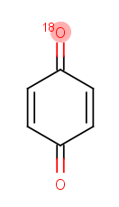 |  |
Note: Deuterium and tritium are recognized as symbols D and T, respectively as well.
Metallocene Error Checker
- Checker searches for incorrect metallocene representations.
- Fixer offers converting to a valid structure: aromatizing the rings, inserting coordination bonds, and fixing charge values.
Example:
| Metallocene Error Checker | Warning: | Fix |
|---|---|---|
| Fix Multiple Metallocenes | ||
| Detect Metallcoene | 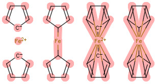 | 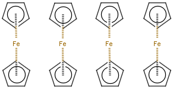 |
Missing Atom Map Checker
- Checker searches for missing atom maps.
- Fixer offers mapping all atoms in the sketch.
Example:
| Missing Atom Map Checker | Warning: | Fix |
|---|---|---|
| Map Atoms | ||
| Detect atoms without atom maps |  |
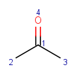 |
Missing R-group Reference Checker
- Checker searches for undefined R-groups.
- Fixer: no fixer is available for this checker.
Example:
| Missing R-group Reference Checker | Warning: | Fix |
|---|---|---|
| Detect undefined R-groups | 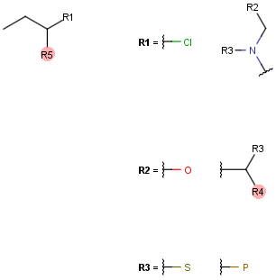 |
Molecule Charge Checker
- Checker searches molecules in which total charge is not zero.
- Fixer offers removing the charge by adding or removing hydrogens.
Example:
| Molecule Charge Checker | Warning: | Fix |
|---|---|---|
| Neutralize | ||
| Detect Charged Molecule |  |
 |
Note: Charge is not checked in reactions. Charged molecules where no hydrogens can be removed are to be corrected manually.
Multicenter Checker
- Checker searches for multicenter drawing.
- Fixer offers removing the multicenter from the molecule.
Example:
| Multicenter Checker | Warning: | Fix |
|---|---|---|
| Delete Atom | ||
| Detect Multicenter drawing |  |
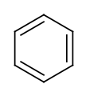 |
Multicomponent Checker
- Checker searches for multiple components in the drawing.
- Fixer: no fixer is available for this checker.
Example:
| Multicomponent Checker | Warning: | Fix |
|---|---|---|
| Detect disconnected fragments | 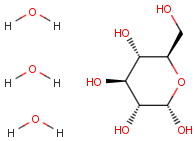 |
OCR Error
- Checker searches for structures imported incorrectly from optical character recognition procedure.
- Fixer: no fixer is available for this checker.
Example:
| OCR Error | Warning: | Fix |
|---|---|---|
| Detecting OCR errors | 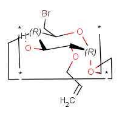 |
Overlapping Atoms Checker
- Checker searches for overlapping atoms, i.e., atoms closer than the pre-set percentage of the default atom radius.
- Fixer offers cleaning the structures by 2D clean.
Example:
| Overlapping Atoms Checker | Warning: | Fix |
|---|---|---|
| Clean | ||
| Detect Overlapping Atoms | 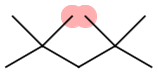 | 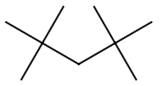 |
Overlapping Bonds Checker
- Checker searches for overlapping bonds: bonds crossing each other or bonds closer to each other than the set minimal value.
- Fixer offers cleaning the structures by 2D clean or partial clean.
Example:
| Overlapping Bonds Checker | Warning: | Fix |
|---|---|---|
| Clean | ||
| Detect Overlapping Bonds | 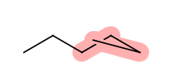 | 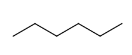 |
Note: Bridged polycycles are cleaned as far as their structure allows it, and the overlapping bonds warning will remain.
Pseudo Atom Checker
- Checker searches for pseudo atoms in the molecule.
- Fixer offers
- converting to abbreviated group if the name is in the abbreviated group list (e.g. Et for ethyl);
- converting to a carbon atom;
- deleting atom.
Example:
| Pseudo Atom Checker | Warning: | Fix | ||
|---|---|---|---|---|
| Convert to Carbon | Delete Atom | Convert Pseudo Atom to Group | ||
| Detect Pseudo Atom | 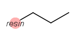 |  |
||
| Detect Pseudo Atom |  |
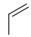 | 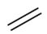 | |
Query Atom Checker
- Checker searches for query atoms.
- Fixer: no fixer is available for this checker.
Example:
| Query Atom Checker | Warning: | Fix |
|---|---|---|
| Find Query Atoms |
Query Bond Checker
- Checker searches for query bonds.
- Fixer: no fixer is available for this checker.
Example:
| Query Bond Checker | Warning: | Fix |
|---|---|---|
| Find Query Bonds |
R-atom Checker
- Checker searches for R-atoms. Tick options for searching:
- All;
- Disconnected;
- Generic;
- Linker, or;
- Nested R-atoms.
- Fixer: no fixer is available for this checker.
Example:
| R-atom Checker | Warning: | Fix |
|---|---|---|
| Find All R-atoms | ||
| Find Disconnected R-atoms | ||
| Find Generic R-atoms | ||
| Find Linker R-atoms |  |
|
| Find Nested R-atoms |  |
R-group Attachment Error Checker
- Checker searches for missing attachment points among R-group elements.
- Fixer offers adding R-group attachment points only in unambiguous cases.
Example:
| R-group Attachment Error Checker | Warning: | Fix | Add attachment point |
|---|---|---|
| Find missing attachment points |
Deprecated - R-group Reference Error Checker
- Checker searches for:
- Unused R-group;
- Missing R-group, or;
- Circular R-group references.
- Fixer: no fixer is available for this checker.
Note: R-group Reference Error Checker has been split into three separate checkers: Circular R-group Reference; Missing R-group Reference, or Unused R-group Reference checker.
Example:
| R-group Reference Error Checker | Warning: |
|---|---|
| Find Unused R-group references | |
| Find Missing R-group references |  |
| Find Circular R-group references |
Racemate Checker
- Checker searches for chiral centers without set configuration.
- Fixer: no fixer is available for this checker.
Example:
| Racemate Checker | Warning: | Fix |
|---|---|---|
| Find unmarked chiral centers |  |
Radical Checker
- Checker searches for radical information on molecules.
- Fixer offers removing the radical information.
Example:
| Radical Checker | Warning: | Fix |
|---|---|---|
| Remove Radical | ||
| Find Radical Information |
Rare Element Checker
- Checker searches for rare elements in the structures. Atoms generally present in organic compounds are: H, Li, Na, K, Mg, Ca, B, C, N, O, F, Cl, Br, I, Al, P, S, Cr, Mn, Fe, Co, Ni, Cu, Zn. Any elements outside this selection are considered rare elements.
- Fixer: no fixer is available for this checker.
Example:
| Rare element Checker | Warning: | Fix |
|---|---|---|
| Find Rare element |
Reaction Map Error Checker
- Checker searches for incomplete reaction map. A reaction with two or less atom maps (both on the reactant and the product side) is considered an incompletely mapped reaction.
- Fixer offers mapping the reaction.
Example:
| Reaction Map Error Checker | Warning: | Fix |
|---|---|---|
| Mapping | ||
| Find incomplete reaction map |
Ring Strain Error Checker
- Checker searches for:
- trans double bonds in bridged rings;
- cumulated double bonds in rings;
- triple bonds in rings.
- Fixer: no fixer is available for this checker.
Example:
| Ring Strain Error Checker | Warning: | Fix |
|---|---|---|
| Detect trans double bonds | ||
| Detect cumulated double bonds | ||
| Detect triple bonds |
Solvent Checker
- Checker searches for fragments in the molecule file defined as solvent molecules if more than one fragment is present. The list is customizable and is stored in a configuration file.
- Fixer offers removing solvent fragments in case only one type of solvent is present.
Example:
| Solvent Checker | Warning: | Fix |
|---|---|---|
| Delete Atom | ||
| Find Solvent Molecules |
The default solvents are: water, methanol, ethanol, propan-1-ol propan-2-ol, butan-1-ol, formic acid, acetic acid, pentane, hexane, benzene, methylbenzene, ethoxyethane, trichloromathane, ethyl acetate, dichloromethane, propan-2-one, acetonitrile, N-methylacetamide, methanesulfonylmethane, oxolane, heptane, 2-mezhylpropan-2-ol, butan-2-one, cyclohexane, cycloheptane, 1,2-dichloroethane, 2-(propan-2-yloxy)propane, 1,2-dimethoxyethane, N,N-dimethylacetamide, pyridine, 1,2-dimethylbenzene, 2-methyoxy-2-methylpropane
Star Atom Checker
- Checker searches for star atoms, inserted as Special node from the Advanced tab of the Periodic Table.
- Fixer offers removing the star atom.
Example:
| Star Atom Checker | Warning: | Fix | |
|---|---|---|---|
| Convert to Carbon | Delete Atom | ||
| Find Star Atom |  |
 |
 |
Stereo Care Box Checker
- Checker searches for stereo care boxes placed on query bonds.
- Fixer offers removing care boxes from bonds.
Example:
| Stereo Care Box Checker | Warning: | Fix |
|---|---|---|
| Remove Stereo Care Box | ||
| Find Stereo Care Box |
Substructure Checker
- Checker searches for SMARTS defined substructures. Substructure Checkers can be set individually.
- Fixer: when the substructure is specified as reaction SMARTS or SMIRKS, the checker works as fixer as well.
Example:
| Substructure Checker | Warning: | Fix |
|---|---|---|
| O=N=O>>[O-][N+]=O | ||
| Checker setting: SMARTS: O=N=O>>[O-][N+]=O |  |
Note: This checker is available only in JChem. The checker can also be accessed from MarvinSketch if MarvinSketch is run from the JChem\bin folder (e.g, c:\Program Files\ChemAxon\Jchem\bin\msketch.bat).
Three Dimension Checker
- Checker searches for 3rd dimension (Z) coordinates.
- Fixer offers cleaning the structures by 2D clean or setting the atomic z-coordinates to zero.
Example:
| Three Dimension Checker | Warning: | Fix | |
|---|---|---|---|
| Remove Z-Coordinate | Clean | ||
| Detect 3D coordinates |  |
 |
 |
Unbalanced Reaction Checker
- Checker detects reaction scheme with differing total atom numbers or atom types on the two sides of the reaction arrow.
- Fixer: no fixer is available for this checker.
Example:
| Unbalanced Reaction Checker | Warning: | Fix |
|---|---|---|
| Detect unbalanced reaction scheme | ||
| Approved reaction scheme |
Unused R-group Reference Checker
- Checker searches for R-group definitions that are not used.
- Fixer removes unused R-group definitions.
Example:
| Unused R-group Reference Checker | Warning: | Fix |
|---|---|---|
| Remove unused R-group definition | ||
| Detect unused R-groups |
Valence Error Checker
- Checker searches for valence errors.
- Fixer offers removing explicit hydrogens if applicable.
Example:
| Valence Error Checker | Warning: | Fix |
|---|---|---|
| Fix Valence | ||
| Detect Valence Error | ||
 |
 |
|
Note: Valence errors with no removable hydrogens have to be corrected manually.
Valence Property Checker
- Checker searches for atoms with marked default and non-default valence properties.
- Fixer offers removing the identified valence properties.
Example:
| Valence Property Checker | Warning: | Fix |
|---|---|---|
| Remove Valence Property | ||
| Detect Marked Valence Property |
Wedge Error Checker
- Checker searches for irregular wedge bonds.
- Fixer offers removing all wedge bonds and replacing them with a single bond.
Example:
| Wedge Error Checker | Warning: | Fix |
|---|---|---|
| Clean Wedge | ||
| Detect irregular wedge bond |  |
Note: Some symmetric structures are not recognized by the checker.
Wiggly Double Bond Checker
- Checker searches for wiggly double bond (molecules with unknown or unspecified configuration).
- Fixer offers changing wiggly double bond to crossed double bond type.
Example:
| Wiggly Double Bond Checker | Warning: | Fix |
|---|---|---|
| Convert to Crossed Double Bond | ||
| Detect Wiggly Double Bond |
Note: Reverse action: Crossed Double Bond checker.